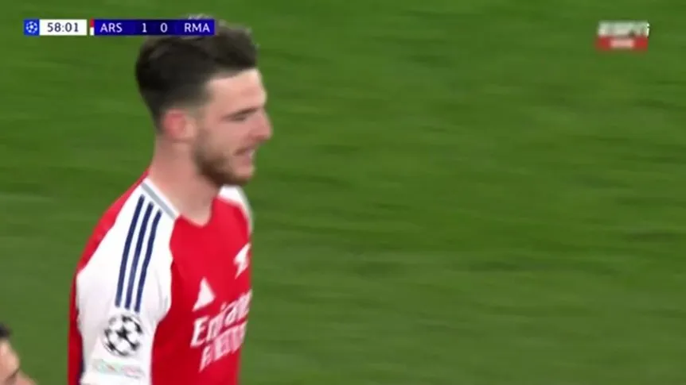

Con dos golazos de Rice de tiro libre, Arsenal aplastó al Real Madrid y sueña con dar el golpe
Los Gunners se impusieron por 3-0 al Merengue, en el Emirates Stadium, por la ida de los cuartos de final de la Champions. La revancha será el próximo miércoles, en el Santiago Bernabéu.
08/04/2025 06:31 pm
Declan Rice marcó dos golazos de tiro libre para Arsenal ante Real Madrid. (Catherine Ivill - AMA/Getty Images)
Arsenal 3 fin 0 Real Madrid
Emirates Stadium Londres
UEFA Champions League - 2024-2025
Arsenal goleó y se ilusiona con dar el gran golpe en la Champions League: aplastó por 3-0 al Real Madrid, en el Emirates Stadium, en la ida de los cuartos de final. Declan Rice fue la figura, con dos golazos de tiro libre.
En el inicio del encuentro, los Gunners controlaron la posesión de la pelota, pero el Merengue fue más peligroso: avisó con chances de Vinícius y Kylian Mbappé.
Sin embargo, el conjunto londinense fue una topadora en el segundo tiempo y encontró el camino hacia el triunfo gracias a Declan Rice: frotó la lámpara y marcó dos golazos de tiro libre a los 12 minutos y luego a los 25.
Arsenal no se conformó con la diferencia de dos goles e insistió. Thibaut Courtois brilló abajo de los tres palos, pero no pudo impedir la goleada. A los 30', tras una gran jugada colectiva, Myles Lewis-Skelly asistió a Mikel Merino, quien remató de zurda y puso el 3-0 para los locales.

En lo que quedó del encuentro, el Merengue estuvo lejos del descuento y sufrió también la expulsión de Eduardo Camavinga por doble amarilla.
De esta manera, Arsenal aplastó por 3-0 a Real Madrid en la ida y se ilusiona con dar el gran golpe en la Champions League.
expulsión de Eduardo Camavinga por doble amarilla. El ganador de la serie se enfrentará al PSG o al Aston Villa de Dibu Martínez en la próxima instancia.
Lo mejor del triunfazo del Arsenal contra Real Madrid en la Champions League